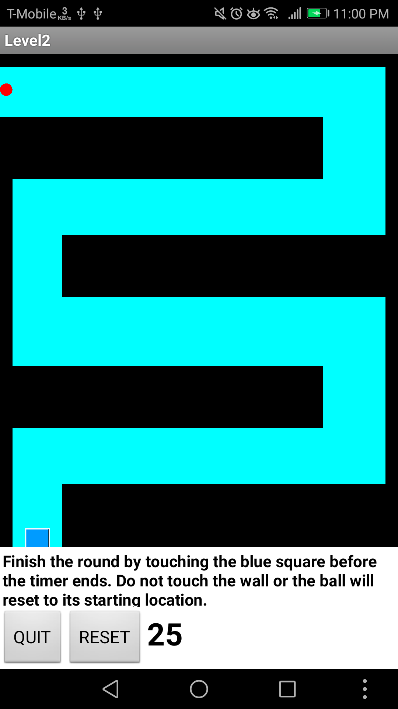

PORTFOLIO


The pictures above is when I went to San Francisco for the second time with my family

GO CHECK MY GAME I CREATED WITH SCRATCH BY CLICKING ON THE PICTURE ABOVE!!!
Election Day
Election Day is a two player game where the players must race each other and get to the top before the other person. The two characters are Hillary Clinton and Donald Trump. One person must choose one of the character and race to the white house.
The stage is consists of different kind of obstacle and trivias to allow fairness in gameplay.

ALSO GO DOWNLOAD THE GAME I CREATED WITH APPINVENTOR CALLED TILT MAZE. CLICK THE PICTURE ABOVE!
Tilt Maze
Tilt Maze is a simple game. The objective of the game is to complete each level by tilting the device and guiding the red ball through the maze. The game is consists of
4 levels with different difficulty. My partner, Cesar, and I created the game to allow the player to test his or her skill in hand coordination and control. I suggest that everyone should download the game and try it out.